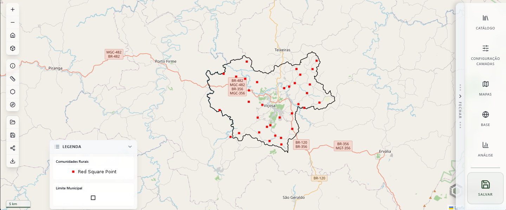
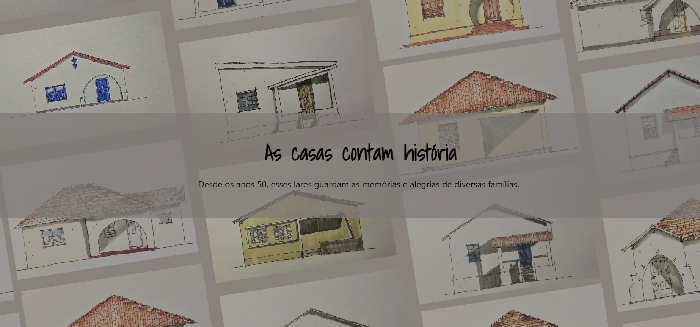
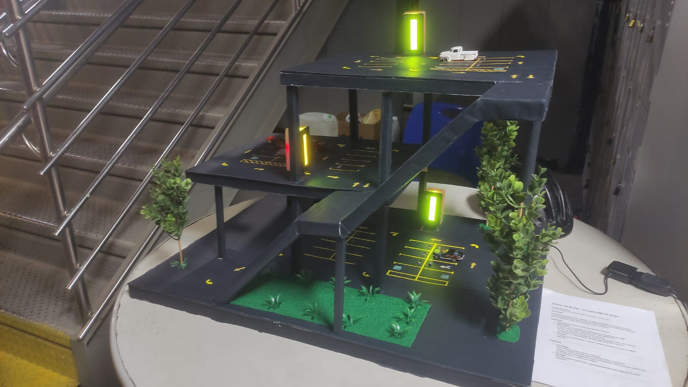
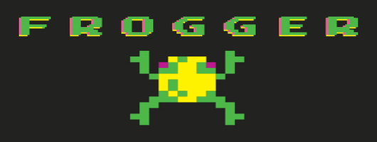

Infraestrutura & Cloud
Experiência em ambientes Cloud (GCP) com Docker, Nginx e redes seguras utilizando Cloudflare Tunnels.
Experiência em ambientes Cloud (GCP) com Docker, Nginx e redes seguras utilizando Cloudflare Tunnels.
Implementação de stacks de monitoramento com Prometheus, Grafana e exportadores de métricas para rastrear performance de aplicações de ponta a ponta.
Conhecimentos consolidados em desenvolvimento em Python, Ruby on Rails, Java e C/C++.
Atuação focada no ecossistema moderno com JavaScript (React) e estilização ágil via Tailwind CSS, garantindo interfaces responsivas.
Modelagem relacional com MySQL e manipulação de bases georreferenciadas via PostGIS, além de integrações com QGIS Server.
Administração de servidores Linux (Ubuntu/Debian). Uso diário de ferramentas como Git, GitHub, Trello e Notion.

Uma plataforma corporativa de Infraestrutura de Dados Espaciais (IDE) projetada para a gestão, governança e catalogação de ativos geográficos. O sistema atua como o motor central de dados, permitindo a ingestão segura de arquivos espaciais (Shapefiles), controle de acesso rigoroso baseado em papéis (RBAC) Multi-tenant e orquestração de serviços de mapas.
 Visualizar
Visualizar

Uma aplicação WebGIS de alta performance focada na visualização e análise de dados espaciais. Funciona como o braço visual do iDataSpace, permitindo que os usuários explorem mapas complexos, sobreponham camadas dinâmicas e extraiam inteligência territorial em tempo real através do navegador.
Visualizar

Desenvolvimento de um site interativo para catalogar residências históricas de Timóteo, MG, com foco em educação patrimonial. Utilizou tecnologias como React, Vite e TailwindCSS para criar um design responsivo e acessível, incluindo tradução em Libras, textos com áudio e modo de alto contraste. O projeto foi apresentado na 1ª Semana de Arquitetura e Urbanismo (SEMAU) e obteve feedback positivo pela integração de recursos inclusivos e educativos.
Visualizar

Projeto interdisciplinar desenvolvido entre os cursos de Arquitetura e Urbanismo e Engenharia de Computação do CEFET-MG. Consistiu na construção de uma maquete de estacionamento e na implementação de um protótipo de sistema embarcado para contabilizar e exibir vagas disponíveis em tempo real. Apresentado na META (Mostra Específica de Trabalhos e Aplicações), conquistou o terceiro lugar na competição.

Projeto desenvolvido a partir do curso de Eng. de Computação no CEFET-MG, durante a materia Conceitos da Linguagem C para por em prática meus estudos iniciais sobre essa linguagem.
Visualizar

Repositorio com outros projeto desenvolvidos a partir do curso de Eng. de Computação no CEFET-MG e cursos onlines colocando em prática meus estudos.
Visualizar
Nós só podemos ver um pouco do futuro,
mas o suficiente para perceber que há muito a fazer.
Graduado em Engenharia de Computação pelo CEFET-MG com experiência em DevOps, Infraestrutura Cloud e Desenvolvimento de Software/Web. Possuo vivência na implantação, manutenção e observabilidade de sistemas utilizando Docker e a stack Prometheus/Grafana, além de experiência prática em Inteligência Artificial com Python e no desenvolvimento de aplicações web utilizando React, Django e Ruby on Rails.

marciogabriel.gs27@gmail.com